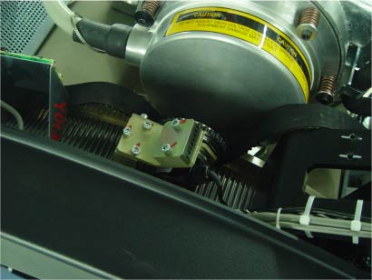
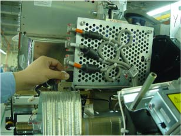
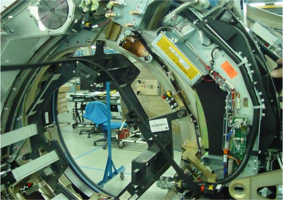

Proprietary to General Electric
Direction 5196839-800, Rev# 6
Proprietary to General Electric |
| CRUSH HAZARD | |
| REMOVING ANY ROTATING COMPONENTS CAN UNBALANCE THE GANTRY. | |
| Do NOt remove any components not specifically called out In this procedure to avoid unbalancing the gantry. |
| ELECTROCUTION HAZARD. | |
| HIGH VOLTAGE PRESENT. | |
| USE PROPER LOCKOUT/TAGOUT PROCEDURES BEFORE REPLACING COMPONENTS. |
| Follow ALL required safety and PPE procedures customary for your organization when working on this product. | |
| Condition | Reference | Eff |
|---|---|---|
Only trained service personnel should service the GE CT Scanner. | - | - |
No other components can be removed from gantry rotating assembly during this procedure. | - | - |
Move table to the home position.
Remove gantry right side cover.
Turn OFF the Axial Drive and HVDC switches on the gantry’s Service Switch Panel.
Rotate the gantry to place the tube at the 10 o'clock position for access to encoder. Do not engage the rotational lock.
Turn OFF the 120 VAC switch on the gantry’s Service Switch Panel.
| ELECTROCUTION HAZARD | |
| HIGH VOLTAGES PRESENT. | |
| Use proper lockout/tagout procedures before replacing components. See safety menu of Service Document gui for appropriate procedures. |
Remove power from the Gantry using LOTO procedures.
Remove the gantry left side cover, top covers and front and rear covers. Also remove the back screws of gantry tilting bottom cover to allow easier access to belt pulley cover screws.
Remove the Home Flag assembly to prevent damage.
Remove the Axial Encoder to prevent damage to the encoder gear teeth.
| CRUSH HAZARD | |
| ROTATING ASSEMBLY WILL ROTATE EASILY WITHOUT DRIVE BELT IN PLACE | |
| Work carefully and pay attention to gantry movement during belt removal. Do not let Gantry rotate freely. |
Using the 5 mm hex key remove the three (3) screws that secure the Drive Gear Cover, and remove the Cover.
To release tension on the belt pulley, loosen the two (2) M12 screws with the 10mm hex head socket, then Using the 6 mm hex head socket and the 12 inch extension, fully loosen the elongated hex screw to loosen the drive belt from the drive gear. Reference Illustration 2.
Remove the drive belt from the drive gear.
Keep the tube at 10 o'clock. Work the belt toward the table on the rotating assembly. Slide the belt from the main drive gear through.
Illustration 3: Belt from the drive gear

Rotate the tube to the 1:00 position, slide the belt from below the rotational lock.
Disconnect the two oil hoses of the tube. Fix the oil hoses by tie-wraps at proper location to prevent damage.
Remove the ORP assembly by disconnecting the cable connector and unscrewing four screws.
Illustration 4: Remove ORP Assembly

Keep all the slack at the tube cooling fan, work the belt around fan.
At this point the Belt slackens. Carefully work the belt around the rest of the rotating gantry, around the 107º balance weight and DAS. completing the removal process.
Illustration 5: Completing Belt Removal

Install the Belt using the removal steps in reverse order.
Install the Home Flag assembly and Axial Encoder per Home Flag Sensor Board Assembly Replacement and Axial Encoder Assembly Replacement procedures.
Slide the Belt over the main Drive Gear and align it towards the back of the rotating assembly teeth. Check both top and bottom.
Work the belt through the pulley tensioner assembly and place on motor drive gear.
Tighten the elongated hex screw using a 6 mm hex head socket and a 12 inch extension. Apply enough tension so the washer can be rotated with your fingers.
Rotate the Gantry by hand and recheck tension of washer. Make sure the belt does not slip off tensioning pulley and is tracking correctly toward the rear of the gantry.
Perform the CT belt tension check and adjustment procedure but not the finalization section.
Install the drive gear cover.
Install ORP assembly.
Connect two oil hoses.
Remove LOTO and restore power to the system.
Enable 120 VAC HVDC and Axial Drive service switches from the service switch panel. Press the table drives enable button on the lower right corner of the service switch panel.
Ensure that the Home Flag Assembly (refer to Home Flag Sensor Board Assembly Replacement) and the Axial Encoder Assembly (Refer to Axial Encoder Assembly Replacement) have been installed and are functioning correctly.
Turn OFF the Axial Drive, HVDC and 120 VAC switches on the gantry’s Service Switch Panel.
Install the gantry front, rear, top and left side covers.
Enable 120 VAC HVDC and Axial Drive service switches from the service switch panel. Press the table drives enable button on the lower right corner of the service switch panel.
Install the gantry right side cover.
Perform a [Fastcal] from the [Daily Prep] button of the scan display.
Perform a [System Scanning Test] from the [Functional Checks] menu of the service manual to ensure system operation.